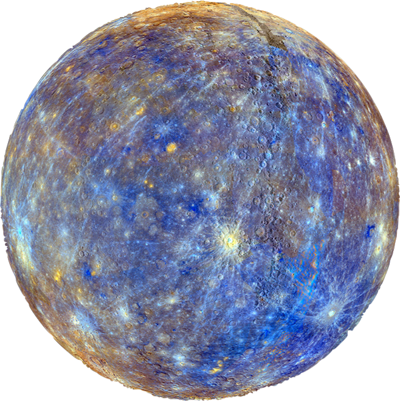
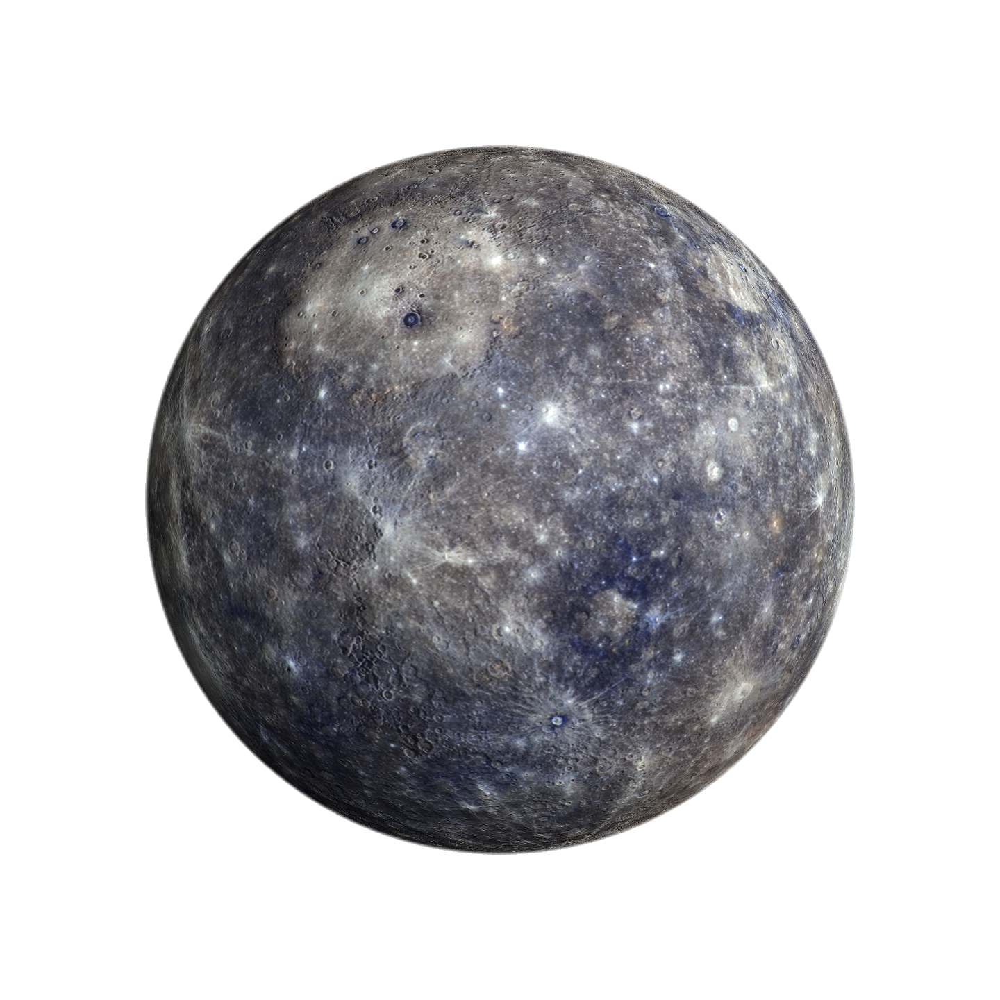

O mensageiro


O Arquétipo do Centro
O Sol é frequentemente visto como o centro organizador da realidade. Ele representa aquilo que irradia ordem em meio ao caos.
- O ego na psicologia
- O “eu essencial” nas tradições espirituais
Diversas culturas o associaram à própria consciência:
- No Egito: o deus solar Rá
- No hinduísmo: Surya
- Em Roma: Sol Invictus
O Sol na Física
- Estrela anã amarela (tipo G2V).
- Composição: ~74% hidrogênio, ~24% hélio.
- Responsável por 99,8% da massa do Sistema Solar.
- Energia gerada por fusão nuclear.
- Centro gravitacional do sistema.